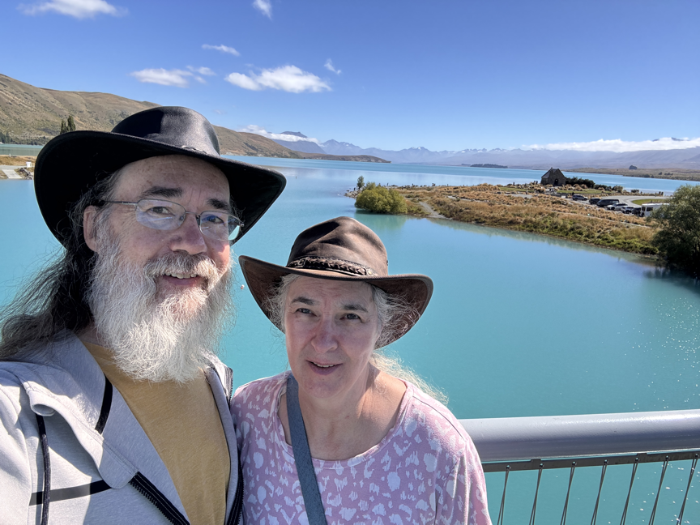
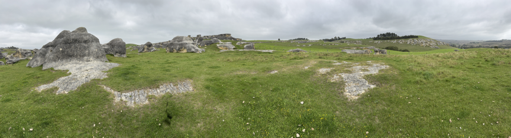

Making our way to Dunedin, South Island, New Zealand!

Drove from Christchurch to Peels Forest and camped.

We hiked up Mount Sunday, which is Edoras in the Lord of the Rings, The Two Towers Movie.


We drove to several amazing natural places. Lake Tekapo for one:

Camped near lake Alexandrina


View of Mt Cook and someone else's drone!

Happened upon a filming location for the Narnia Movie (Elephant Rocks):

Came upon this 'Turdis" upon arrival in the Dunedin area off Route 1.

We visited Larnach Castle Gardens (only viewed the outside of the castle).


We visited with our friend Jackson, sharing a pizza at Biggies

We were told we must photograph the statue of Robert Burns with his back to the Church.

View Lord of the Rings Locations here!